Latinoamérica: Expansionismo y Hegemonía estadounidenses 1900- 1930.
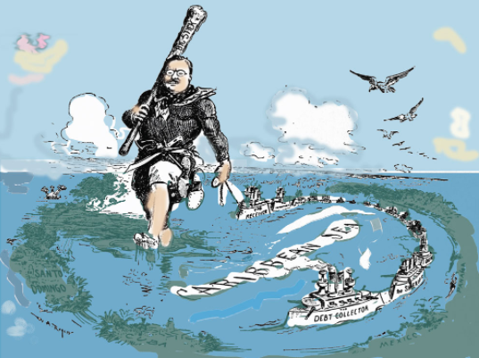
Fuente: https://portalacademico.cch.unam.mx/historiauniversal2/america-latina-1918-1945/politica-exterior-de-eu
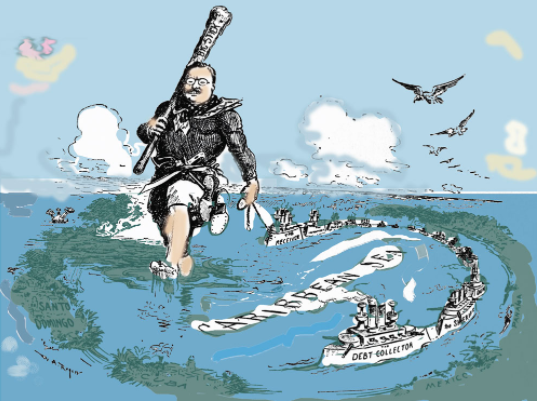
Fuente: https://portalacademico.cch.unam.mx/historiauniversal2/america-latina-1918-1945/politica-exterior-de-eu
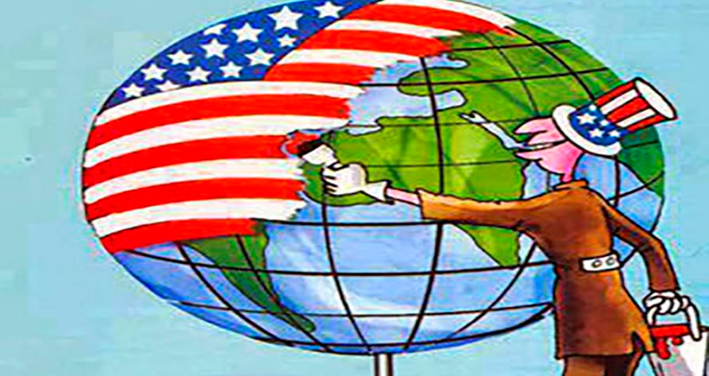
Título de la unidad I : Latinoamérica. Expansionismo y Hegemonía e estadounidenses 1900-1930.
Área curricular: Ciencias Sociales.
Asignaturas: Historia y Geografía
Año escolar: 2021-2022
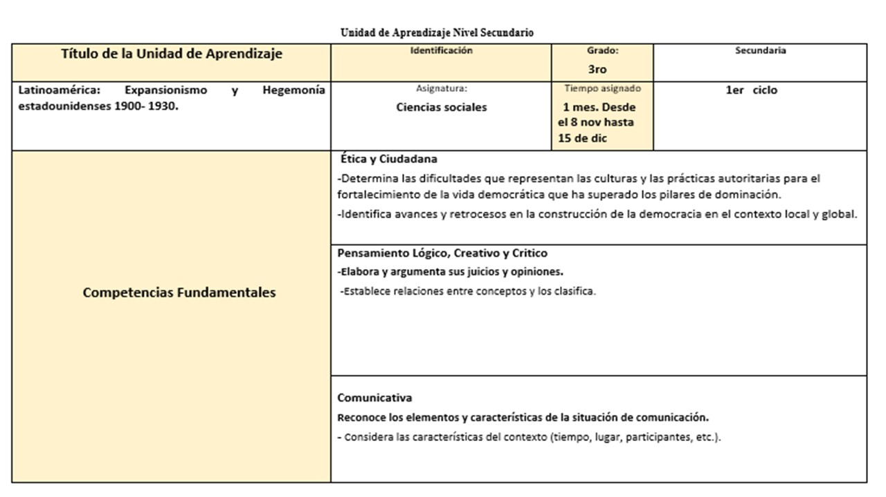
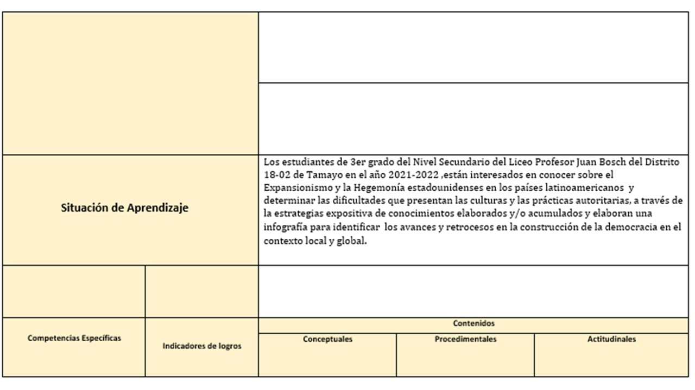
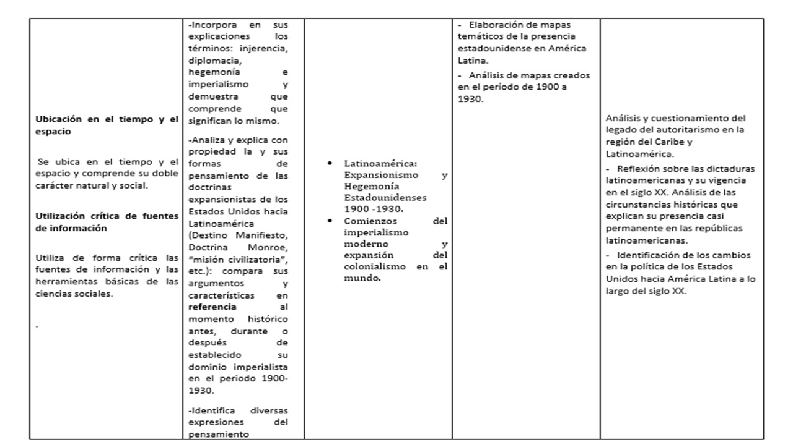
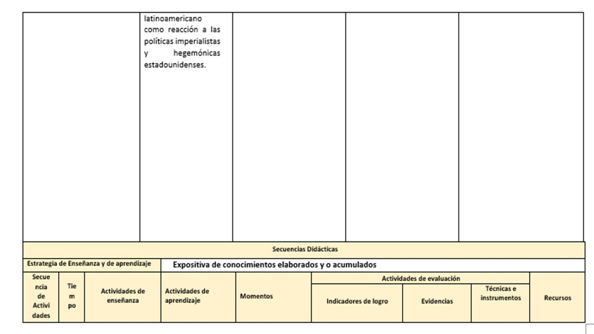
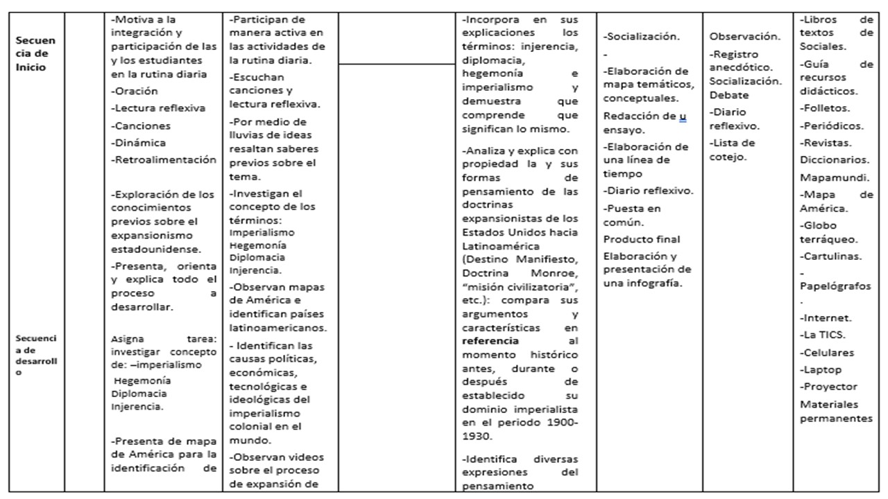
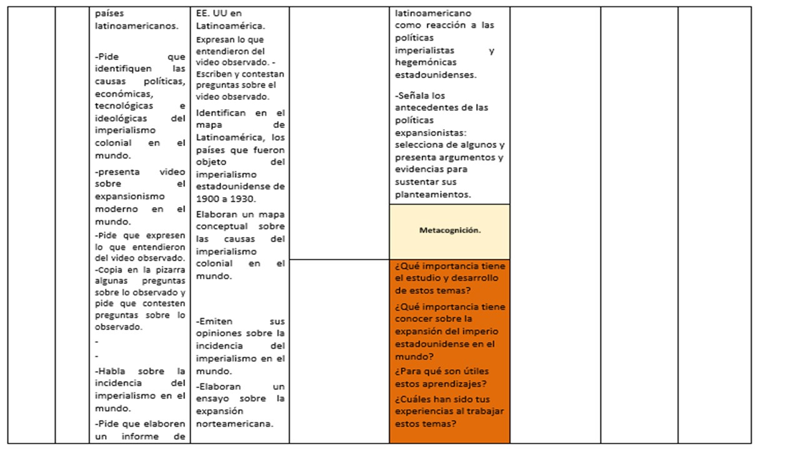
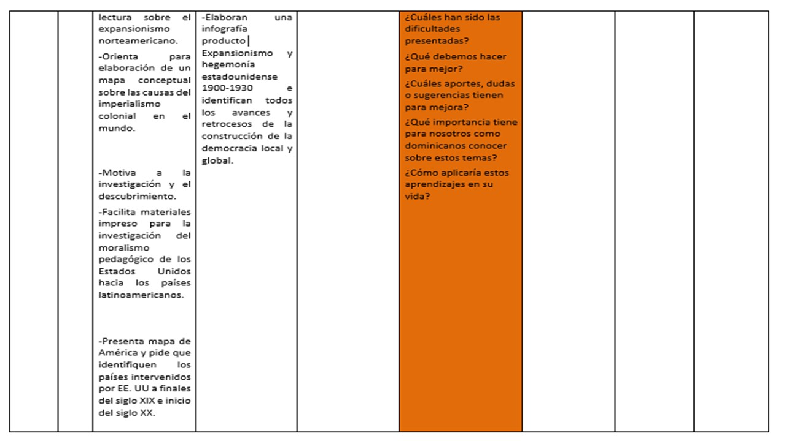
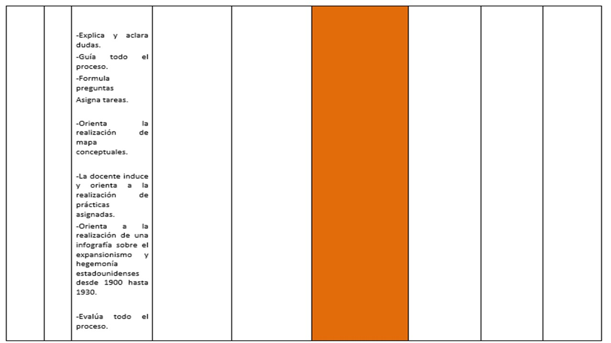
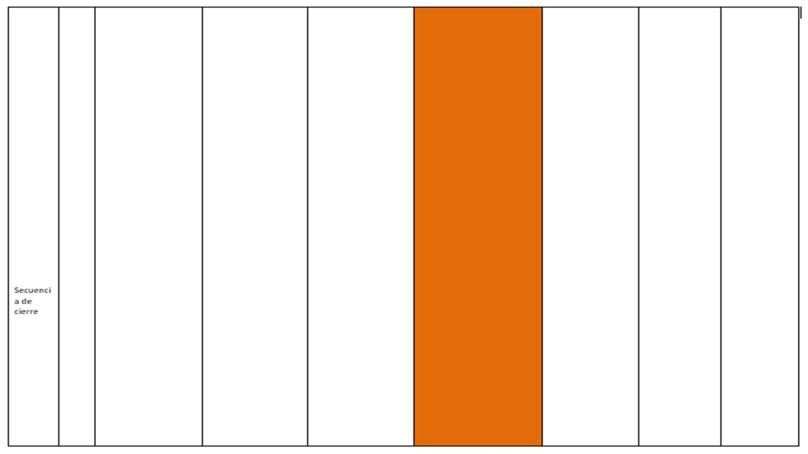
El Imperialismo Moderno o Neoimperialismo se refiere a la política e ideología de expansión colonial e imperialismo adoptada por las potencias europeas y posteriormente por los Estados Unidos y Japón desde fines del siglo XIX hasta principios del siglo XX, aproximadamente desde la Guerra Franco-Prusiana (1871) hasta comienzos de la Primera Guerra Mundial (1914). El calificativo de "nuevo" es para contrastarlo con la primera ola de colonización europea desde los siglos XV al XIX y con el imperialismo en general. Se caracteriza por una persecución sin precedentes de lo que ha sido denominado "el imperio por el imperio mismo", una agresiva competición por la adquisición de territorios de ultramar acompañada por la emergencia en los países colonizadores de doctrinas de superioridad racial que negaban la capacidad de los pueblos subyugados para gobernarse en ellos mismos.
Como hacia 1880 la mayor parte de África todavía estaba sin ocupar por las potencias occidentales, ese continente se constituyó en el principal objetivo de la "nueva" expansión imperialista, dando lugar al llamado Reparto de África. Dicha expansión también tuvo lugar en otras áreas, notablemente en el Sureste Asiático y las regiones marítimas del Este de Asia, donde Estados Unidos y Japón se unieron a las potencias europeas en el reparto territorial.
Durante las décadas de 1940, 1950 y 1960, una ola de levantamientos independentistas pone fin a los imperios coloniales europeos que aún sobrevivían.
Con el colapso del Imperio Español en América Latina en las primeras décadas del siglo XX dio al traste con el fin de la primera era del Imperialismo Europeo, alrededor de 1820.
En Gran Bretaña, la era del Nuevo Imperialismo marcó un tiempo de significativos cambios económicos. Debido a que el país fue el primero en industrializarse, Gran Bretaña estuvo tecnológicamente adelantada de muchos otros países durante la mayor parte del siglo XIX. Sin embargo, a finales del siglo XIX, otros países como Alemania, Estados Unidos, Rusia e Italia pronto se emparejaron con ella en cuanto a poder tecnológico y económico. Luego de varias décadas de monopolio, el país luchaba por mantener una posición económica dominante, a medida que las demás potencias se involucraban más en los mercados internacionales.
En 1870, Gran Bretaña poseía el 31,8% de la capacidad mundial de manufactura, mientras que Estados Unidos tenía el 23,3 % y Alemania el 13,2 %. En 1910, la capacidad industrial de Gran Bretaña había caído al 14,7 % mundial, mientras que en Estados Unidos había aumentado a 35,3 % y en Alemania al 15,9 %. Mientras países como Alemania y Estados Unidos crecían económicamente, comenzaban a involucrarse con el imperialismo, resultando en que los británicos lucharan por mantener su volumen de comercio y la inversión de ultramar.
Gran Bretaña enfrentaba relaciones internacionales tensas con las tres potencias expansionistas (Japón, Alemania e Italia) durante principios del siglo XX. Antes de 1939, estas tres potencias nunca amenazaron directamente la propia Inglaterra, pero los peligros indirectos eran claros. Por la década de 1930, a Inglaterra le preocupaba que Japón ponga en peligro sus posesiones en el Lejano Oriente, así como los territorios de la India, Australia y Nueva Zelanda. Italia mostraba interés en el norte de África, amenazando al Egipto británico, y el expansionismo alemán en el continente Europeo amenazaba la seguridad de Inglaterra. Con su estabilidad y las explotaciones amenazadas, Gran Bretaña decidió adoptar una política de concesión en lugar de la resistencia, una política que se conoció como de apaciguamiento.
El poema de 1891 de Rudyard Kipling, "La bandera Inglesa," contiene la estrofa:
Winds of the World, give answer! They are whimpering to and fro--‘
And what should they know of England who only England know?--‘
'The poor little street-bred people that vapour and fume and brag,‘
'They are lifting their heads in the stillness to yelp at the English Flag!‘
Estas líneas muestran la creencia de Kipling de que los británicos que participaban activamente en el imperialismo sabían más acerca de la identidad nacional británica que aquellos cuyas vidas se gastaban únicamente en las metrópolis imperiales. En muchos sentidos, esta nueva forma de imperialismo formó parte de la identidad británica hasta el final de la era del nuevo imperialismo, con la Segunda Guerra Mundial.
El Neo-Imperialismo dio origen a nuevos puntos de vista sociales del colonialismo. Rudyard Kipling en su poema The White Man´s Burden, instó a Estados Unidos a "Tomar la carga" de llevar la civilización europea a los demás pueblos del mundo, independientemente de si estos "otros pueblos" quieran esta civilización o no. Esta parte de "la carga del hombre blanco" es un ejemplo de la actitud de Gran Bretaña hacia la colonización de otros países.
Fuente: Latinoamérica Expansionismo y Hegemonía estadounidense 1900-1930, Biannely Vasquez, Canal de youtube.
En este punto debe leer cada pregunta y responder verdadero o falso, según considere.
Verdadero
Verdadero
Verdadero
Verdadero
Verdadero
Verdadero
Verdadero
Recurso 1
Fuente: Big Stick, Daniela Leiva Seisdedos, Canal de youtube.
Recurso 2
Fuente: Política del garrote y el poder de Estados Unidos sobre América Podcast, Daniel Favieri, Canal de youtube.
Neoimperialismo:
Fue una política e ideología de expansión colonial e imperialismo adoptada por las potencias europeas y posteriormente por Estados Unidos y Japón desde finales del siglo XIX hasta principios del siglo XX.
Expansionismo:
Tendencia a extender el dominio político y económico de un país a otras áreas geográficas.
Apaciguamiento:
Establecimiento de la calma y la tranquilidad en el ánimo violento o excitado de una persona.
Colonialismo:
Sistema político y económico por el cual un estado extranjero domina y explota una colonia.
Monopolio:
Derecho legal concedido por el Estado a un individuo, grupo o empresa para explotar con carácter exclusivo alguna industria o comercio.
Contenido elaborado por:
Obra publicada con Licencia Creative Commons Reconocimiento Compartir igual 4.0